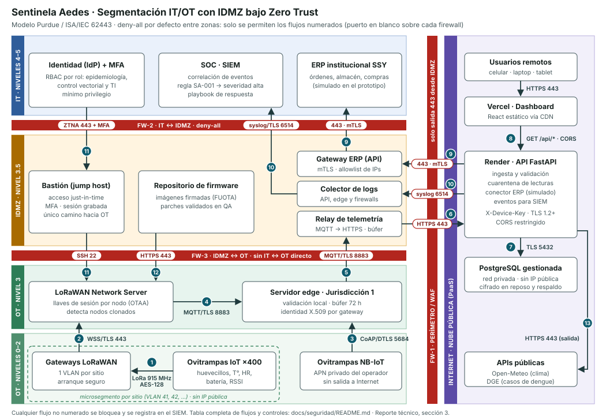
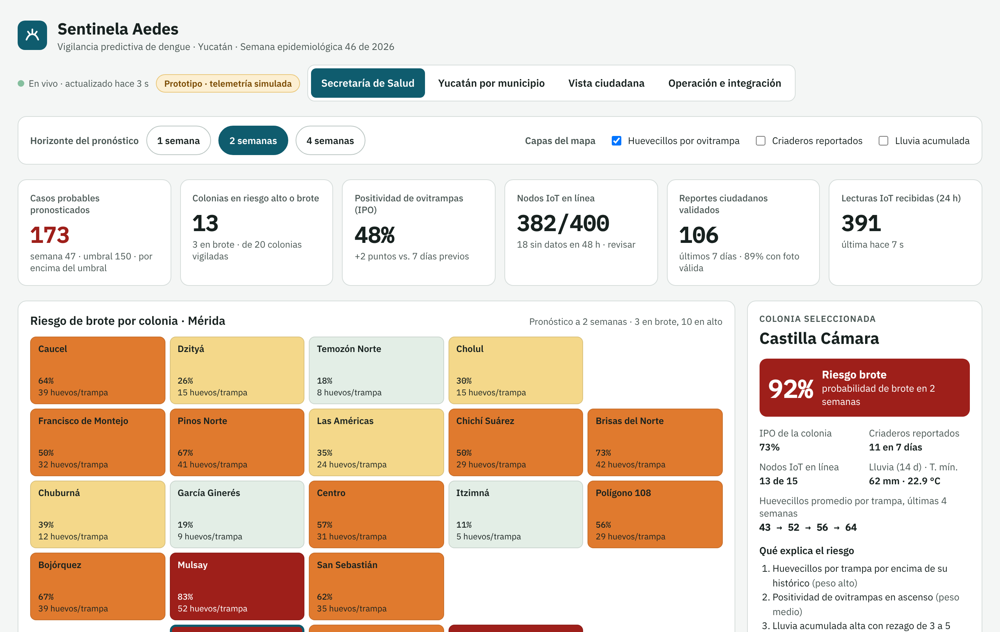
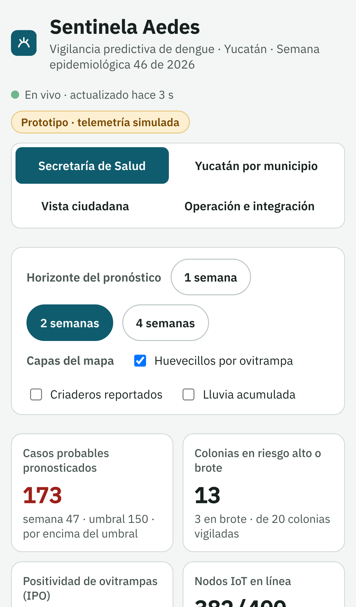

Sentinela Aedes anticipa brotes de dengue en Mérida y los municipios de Yucatán. Combina una red de 400 ovitrampas IoT que cuentan huevecillos del mosquito Aedes aegypti y miden microclima con clima real (Open-Meteo) y casos por semana epidemiológica. Con esos datos calcula la probabilidad de brote por colonia y municipio a 1, 2 y 4 semanas. Las decisiones que se toman en el tablero (asignar una brigada, atender un reporte ciudadano, dar mantenimiento a los nodos) se convierten en documentos para el ERP de la Secretaría de Salud (SSY). Como los sensores físicos aún no existen, un simulador de flota genera la telemetría continua, y esta pasa por la misma API y las mismas validaciones que usaría un nodo real.
node_simulator.pyPOST /api/telemetry, llave de dispositivo, validación, cuarentena, regla SIEMPOST /api/telemetry recibe una lectura o un lote de hasta 500 lecturas por gateway y exige el encabezado X-Device-Key. Cada lectura pasa por telemetry.py, que aplica estas reglas de calidad. Si una lectura falla, se guarda en quarantined_readings con su motivo y no se pierde.
Las lecturas válidas se guardan en PostgreSQL. Cada 5 s el simulador interno envía microclima de 2 a 4 nodos, los conteos diarios a la hora programada de cada trampa y, de vez en cuando, una lectura anómala que prueba la cuarentena. Cada 6 h el backend actualiza el clima real. La analítica (analytics.py) calcula en el servidor los KPIs, el riesgo por área con un modelo logístico que explica qué variables pesan más, y el pronóstico estatal. El tablero lo recibe completo en una sola llamada (GET /api/dashboard). Hay 11 pruebas automáticas de extremo a extremo (pytest) que cubren ingesta, cuarentena, ERP y la regla SIEM.
No se construyó un ERP. La función erp.enviar_a_erp() actúa como la capa de integración: arma el documento con la estructura que espera un ERP (sociedad, centro de costos, folio, partidas de materiales con precio e importe), lo imprime en la consola del servidor (visible en los logs de Render), simula la latencia de red, recibe un acuse con número de documento ERP y guarda la transacción en erp_transactions. El tablero muestra una alerta con el folio. Para las órdenes de servicio se emula la lógica de un MRP: la cantidad de larvicida, adulticida y horas-hombre depende del nivel de riesgo y del número de viviendas de la colonia.
| Acción en el dashboard | Documento ERP | Contenido y uso en la SSY |
|---|---|---|
| Asignar brigada a colonia/municipio | ORDEN_SERVICIO | Prioridad, ubicación, motivo, variables que explican el riesgo, requisición de materiales e importe; base para almacén y compras |
| Reporte ciudadano de criadero | AVISO_CIUDADANO | Folio ciudadano, colonia con precisión de 100 m (privacidad), evidencia fotográfica |
| Nodos sin datos > 48 h | ORDEN_MANTENIMIENTO | Equipos afectados, kits de reposición y horas de técnico (mantenimiento de activos) |
| Sincronizar indicadores | REPORTE_KPI | Casos pronosticados a 1–4 semanas, colonias por nivel, IPO y nodos en línea, para los tableros de dirección |
[ERP-SIM] >>> Enviando ORDEN_SERVICIO OS-2026-000001 a ERP institucional SSY (simulado) ... [ERP-SIM] {"sistema_origen": "SENTINELA-AEDES", "tipo_documento": "ORDEN_SERVICIO", "sociedad": "SSY-YUC", "centro_costos": "SSY-VECTORES-JS1", "datos": {"prioridad": "URGENTE", "ubicacion": {"nombre": "Mulsay", "municipio": "Mérida", ...}, "motivo": "Probabilidad de brote de dengue de 83% a 2 semana(s)", "partidas": [{"material": "LARV-TEMEFOS", "cantidad": 24.0, "unidad": "KG", "importe": 4440.0}, {"material": "HH-BRIGADA", "cantidad": 100.0, "unidad": "H", "importe": 12000.0}, ...]}} [ERP-SIM] <<< Acuse RECIBIDO · documento ERP 4500000001 para OS-2026-000001
El núcleo (API y base de datos) se aloja en Render y el dashboard en Vercel. Ambos son plataformas como servicio (PaaS). La decisión se tomó comparando el trabajo que exige cada modelo con lo que el proyecto necesita:
| Criterio | IaaS (VM en AWS EC2 / Azure VM) | PaaS elegido (Render + Vercel) |
|---|---|---|
| Operación | El equipo parcha el SO, instala Python/Nginx, configura firewall y certificados | El proveedor administra SO, runtime y parches; el equipo de 2 personas se concentra en la lógica |
| Seguridad | TLS, respaldos y hardening manuales (más superficie de error) | TLS automático, base sin IP pública, respaldos gestionados, health check (/api/health) |
| Despliegue | Scripts propios o CI/CD a configurar | Despliegue continuo desde GitHub; infraestructura como código en render.yaml |
| Costo del piloto | Pago por hora aunque no haya tráfico | Plan gratuito suficiente para el prototipo; escala por plan sin rediseño |
| Portabilidad | Alta | Alta: uvicorn + PostgreSQL estándar, migrable a contenedor en AWS, Azure o GCP |
Límites reconocidos. En el plan gratuito el servicio se suspende tras 15 min sin tráfico y la base gratuita caduca a los 30 días. Además, la región es Ohio (EE. UU.). Para producción, los datos de salud se consideran datos personales sensibles para un sujeto obligado (LGPDPPSO), por lo que se migraría a un plan de pago en una región de nube en México (Querétaro: AWS, Azure o Google Cloud). La arquitectura queda híbrida: el Network Server LoRaWAN y el servidor edge permanecen en sitio o en IaaS, porque necesitan conexiones UDP/MQTT persistentes y operar aunque falle el enlace a Internet.
La red se segmenta con el modelo Purdue (ISA/IEC 62443) y principios Zero Trust. Entre zonas la regla por defecto es deny-all y solo pasan los 13 flujos numerados. Ningún flujo va directo de IT a OT: todo termina en la IDMZ (relay de telemetría, gateway ERP con mTLS, colector de logs, bastión con MFA y repositorio de firmware firmado). Las conexiones desde OT se inician siempre hacia afuera, así que OT no expone puertos de entrada. Cada sitio de campo es un microsegmento (una VLAN por sitio).

docs/seguridad/).telemetry.py| Campo | Definición |
|---|---|
| Amenaza | Fuerza bruta de la llave (ATT&CK T1110) para inyectar conteos falsos (ICS T0856) |
| Logs fuente | security_events: kind, source_ip, ts |
| Condición | kind = auth_fail agrupado por source_ip |
| Umbral | ≥ 5 eventos en 60 s (1 alerta por IP/min) |
| Severidad | Alta (el fallo individual es media) |
| Acción | Auto: evento brute_force, aviso [SIEM] y alerta en el tablero. SOC: bloquear la IP 30 min en el WAF o rotar la llave del gateway |
La regla también está escrita en formato Sigma 2.0 (docs/seguridad/SA-001.sigma.yml), así que se puede convertir a Splunk, Elastic o Wazuh sin reescribirla. En la demo se dispara en vivo con node_simulator.py --ataque, que envía llaves inválidas: el evento de severidad alta aparece en /api/security/events y en la pestaña de operación.
El dashboard (React + Vite, en Vercel) tiene cuatro vistas: Secretaría de Salud (riesgo por colonia de Mérida), Yucatán por municipio, vista ciudadana y Operación e integración (telemetría en vivo, cuarentena, nodos caídos, bitácora ERP y eventos de seguridad). Los KPIs se actualizan solos desde el backend: el tablero consulta cada 10 s y la vista de operación cada 4 s, sin recargar la página, y el indicador «En vivo · actualizado hace N s» muestra la frescura del dato. Los KPIs son casos pronosticados contra el umbral epidémico, colonias en riesgo alto o brote, positividad de ovitrampas (IPO), nodos en línea, reportes validados y lecturas en 24 h. El diseño se reacomoda a una columna en el celular.


Supervisión a distancia y toma de decisiones. El jefe de la Jurisdicción no necesita estar en la oficina. Desde el celular ve que una colonia pasó a nivel «brote», revisa qué variables lo explican (huevecillos sobre su histórico, lluvia con rezago, IPO en ascenso) y pulsa Asignar brigada. En menos de un segundo se genera la orden de servicio con su requisición de materiales y el ERP devuelve el acuse con folio. Almacén y compras reciben el documento sin capturas manuales. El técnico de campo también ve desde su teléfono qué nodos llevan más de 48 h sin reportar y genera la orden de mantenimiento. Así se cierra el ciclo dato → decisión → recurso, que antes dependía de oficios y de reuniones semanales.
| Barrera | Cómo la atiende la arquitectura |
|---|---|
| Los casos llegan por lotes semanales del SINAVE y de los datos abiertos de la DGE (ZIP/CSV, sin API) | ETL etl_dge.py que descarga, filtra Yucatán y agrega por municipio y semana epidemiológica (criterio SINAVE); reemplaza los casos simulados |
| El ERP institucional no tiene API REST moderna (interfaces por archivo o SOAP, catálogos propios) | Conector desacoplado con documento canónico JSON y folio: para conectar el ERP real solo cambia el adaptador, publicado detrás del gateway ERP en la IDMZ |
| La vigilancia entomológica es manual: los conteos semanales de ovitrampas se capturan a mano | Conteo diario automático con validación en origen; se planea una operación en paralelo con el conteo manual para calibrar el sistema |
| La conectividad es intermitente en municipios rurales y los sensores pueden fallar | LoRaWAN/NB-IoT con búfer store-and-forward en el edge; cuarentena de lecturas y orden de mantenimiento automática para nodos sin datos > 48 h |
La arquitectura convierte un programa reactivo en un servicio de vigilancia anticipada. La red propia de ovitrampas genera un dato que otros no tienen, y la integración con el ERP lo convierte en acción y en costo trazable. El valor se mide con indicadores que el sistema ya calcula o registra:
| Indicador | Cómo se mide en el prototipo |
|---|---|
| Anticipación del brote | Semanas entre la alerta por colonia y el cruce del umbral epidémico (pronóstico a 1–4 semanas) |
| Tiempo de alerta a orden de servicio | Marca de tiempo del riesgo frente al created_at del documento ERP (de días por oficio a minutos) |
| Costo por intervención focalizada | importe_total_mxn de cada orden: insumos según nivel de riesgo, en lugar de fumigar toda la ciudad |
| Confiabilidad del dato | Nodos en línea, % de lecturas en cuarentena y eventos de seguridad |
Sobre esta base se pueden ofrecer servicios de mayor valor: vigilancia como servicio para otros municipios y estados, pronósticos por API para hospitales (planear camas) y para el sector turístico, y reportes automáticos a dirección. Todo eso reutiliza la misma API, el mismo modelo y el mismo conector.
uvicorn app.main:app en backend/ y npm run dev en frontend/. Pruebas: python -m pytest -q (11 pruebas). El README del repositorio tiene las instrucciones de despliegue en Render y Vercel.